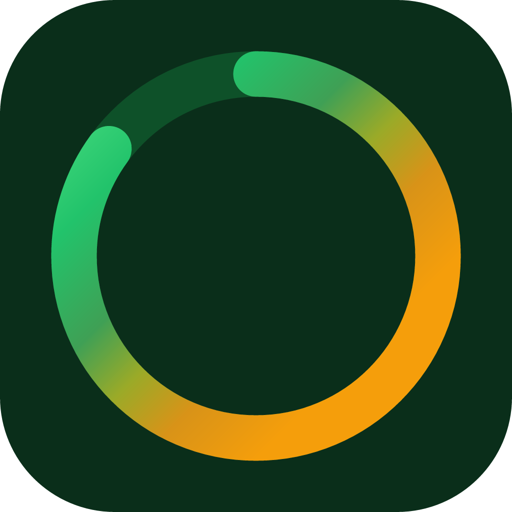

Your whole life, in one score.
The recurring things that are easy to forget — the filter, the rotation, the check-up — tracked in one place, and turned into a single number you can actually move.
Privacy Support